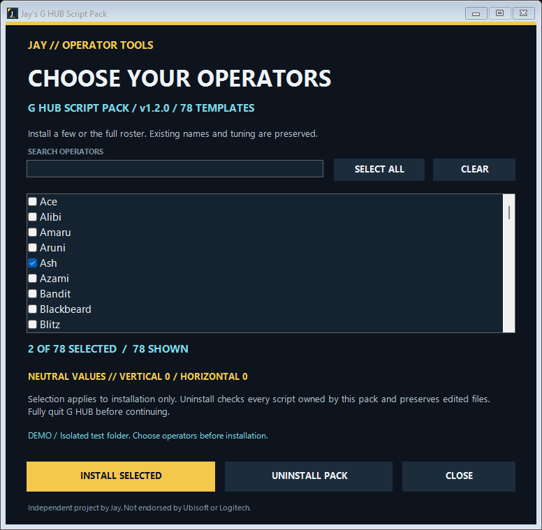

SIEGE / LOGITECH G HUB / WINDOWS
YOUR
OPERATORS.
YOUR SETUP.
A clean starting point for your G HUB scripts. Pick your operators, install their Lua templates, and tune them your way.
Download for Windows01 / THE INSTALLER78 OPERATORS

A SETUP THAT STAYS YOURS
Start clean.
Keep what works.
A separate script for each operator. Only the ones you choose. Existing names are skipped, backups are automatic, and edited scripts survive uninstall.
Read the setup guide ↗V1.2.0 / WINDOWS